Creational Patterns
Abstract Factory
Intent Provide an interface for creating families of related or dependent objects without specifying their concrete classes.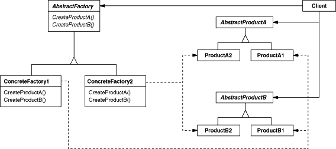
Builder
Intent Separate the construction of a complex object from its representation so that the same construction process can create different representations.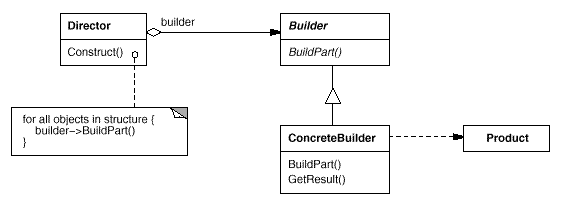
Factory Method
Intent Define an interface for creating an object, but let subclasses decide which class to instantiate. Factory Method lets a class defer instantiation to subclasses.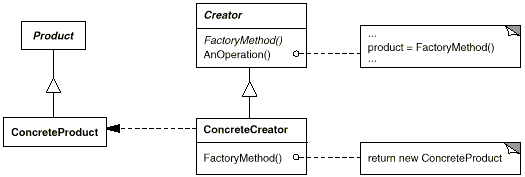
Prototype
Intent Specify the kinds of objects to create using a prototypical instance, and create new objects by copying this prototype.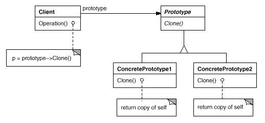
Singleton
Intent Ensure a class only has one instance, and provide a global point of access to it.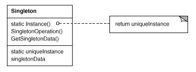
Structural Patterns
Adapter
Intent Convert the interface of a class into another interface clients expect. Adapter lets classes work together that couldn't otherwise because of incompatible interfaces.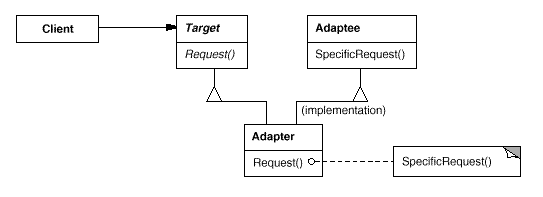
Bridge
Intent Decouple an abstraction from its implementation so that the two can vary independently.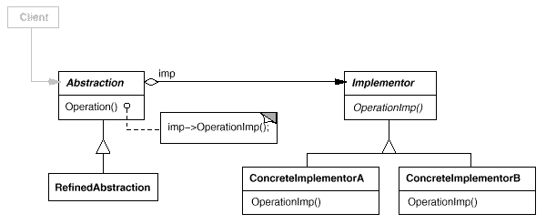
Composite
Intent Compose objects into tree structures to represent part-whole hierarchies. Composite lets clients treat individual objects and compositions of objects uniformly.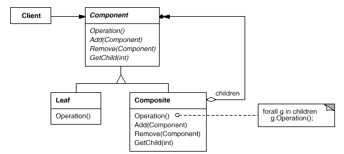
Decorator
Intent Attach additional responsibilities to an object dynamically. Decorators provide a flexible alternative to subclassing for extending functionality.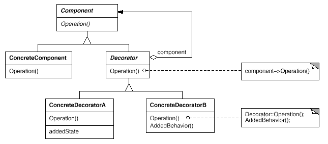
Facade
Intent Provide a unified interface to a set of interfaces in a subsystem. Facade defines a higher-level interface that makes the subsystem easier to use.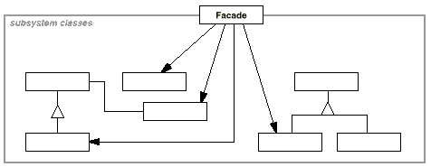
Flyweight
Intent Use sharing to support large numbers of fine-grained objects efficiently.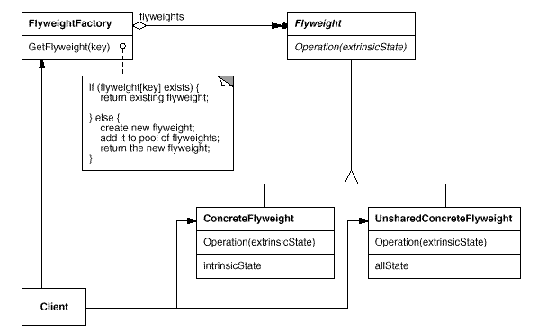
Proxy
Intent Provide a surrogate or placeholder for another object to control access to it.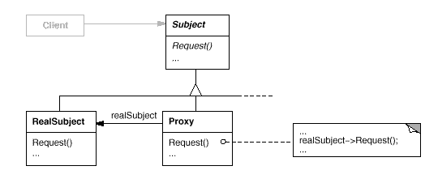
Behavioral Patterns
Chain of Responsibility
Intent Avoid coupling the sender of a request to its receiver by giving morethan one object a chance to handle the request. Chain the receivingobjects and pass the request along the chain until an objecthandles it.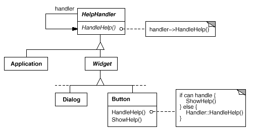
Command
Intent Encapsulate a request as an object, thereby letting you parameterizeclients with different requests, queue or log requests, and supportundoable operations.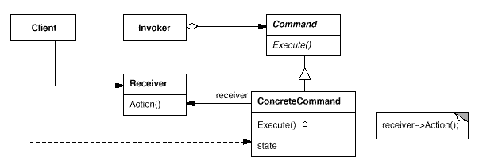
Interpreter
Intent Given a language, define a represention for its grammar along with aninterpreter that uses the representation to interpret sentences in thelanguage.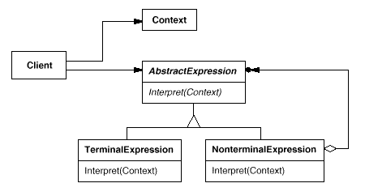
Iterator
Intent Provide a way to access the elements of an aggregate objectsequentially without exposing its underlying representation.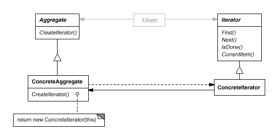
Mediator
Intent Define an object that encapsulates how a set of objects interact.Mediator promotes loose coupling by keeping objects from referring toeach other explicitly, and it lets you vary their interactionindependently.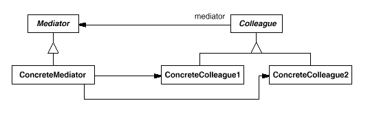
Memento
Intent Without violating encapsulation, capture and externalize an object'sinternal state so that the object can be restored to this state later.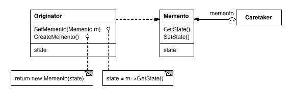
Observer
Intent Define a one-to-many dependency between objects so that when oneobject changes state, all its dependents are notified and updatedautomatically.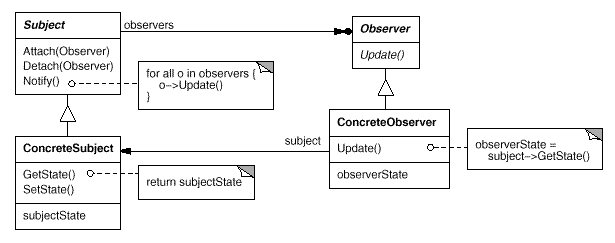
State
Intent Allow an object to alter its behavior when its internal state changes.The object will appear to change its class.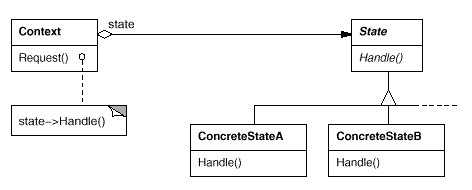
Strategy
Intent Define a family of algorithms, encapsulate each one, and make theminterchangeable. Strategy lets the algorithm vary independently fromclients that use it.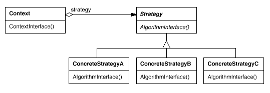
Template Method
Intent Define the skeleton of an algorithm in an operation, deferring somesteps to subclasses. Template Method lets subclasses redefinecertain steps of an algorithm without changing the algorithm'sstructure.
Visitor
Intent Represent an operation to be performed on the elements of an objectstructure. Visitor lets you define a new operation without changing theclasses of the elements on which it operates.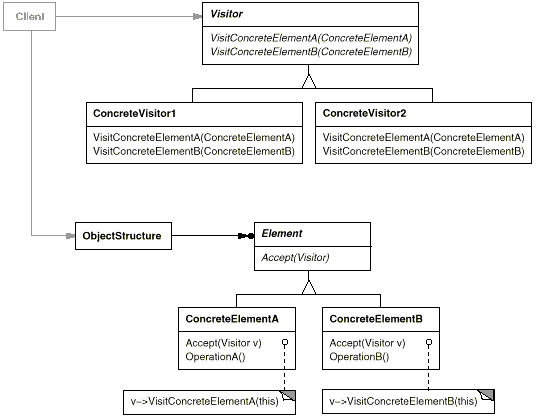